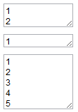
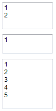

HF1007: Firefox 中 TEXTAREA 元素根据 'rows' 设置值生成的实际行数为设置值 + 1
标准参考
根据 W3C HTML 4.01 规范中的描述，TEXTAREA 元素的 rows 属性指定了可视文本的行数。用户应该被允许输入更多行的文本，但当内容超出可视区域时，用户端应该为文本内容提供类似滚动机制。
关于 "rows" 属性的详细信息，请参考 HTML4.01 规范 17.7 中的内容。
问题描述
Firefox 对 TEXTAREA 元素的 "rows" 属性解释有误，实际显示的 TEXTAREA 元素的行数会比设置的属性值多 "1" 。
造成的影响
当仅仅为 TEXTAREA 元素设置 "rows" 属性以控制其高度时，在 Firefox 中无法得到预期的效果。
受影响的浏览器
| Firefox |
|---|
问题分析
本例创建了三个 TEXTAREA 元素：
<textarea rows="0">1 2</textarea> <textarea rows="1">1</textarea> <textarea rows="5">1 2 3 4 5</textarea>
根据 HTML4.01 规范中的描述可知，上述代码中的第二个及第三个 TEXTAREA 元素的可视行数应该分别为 "2行" 和 "5行" 。
代码在不同的浏览器环境中的表现：
| IE6 IE7 IE8 | Chrome Safari | Opera | Firefox |
|---|---|---|---|
 |
 |  |
 |
从截图中很明显地看出，Firefox 中，TEXTAREA 元素的可视行数均比其他浏览器多一行，且当 "rows" 属性不存在或者为非自然数时，各浏览器对 "rows" 属性的默认值均是 "2" ，Firefox 则正好多一行为 "3" 。
这是 Firefox 的一个经典 Bug，已经存在很长时间，参见官方站点说明：https://bugzilla.mozilla.org/show_bug.cgi?id=33654。
解决方案
当我们仅仅为 TEXTAREA 元素设置 "rows" 属性以控制其高度时，在 Firefox 中无法得到我们预期的效果。且其他浏览器对 "rows" 属性设置的元素高度也不尽相同，这一点 W3C 没有明确规范 "rows" 属性计算高度时的具体算法。
如果要精确控制 TEXTAREA 元素的尺寸（高度）时，请避免使用 "rows" 属性改用 CSS 相关设定，以保证所有浏览器拥有统一的视觉样式。
参见
知识库
相关问题
测试环境
| 操作系统版本: | Windows 7 Ultimate build 7600 |
|---|---|
| 浏览器版本: |
IE6 IE7 IE8 Firefox 3.6 Chrome 5.0.342.2 dev Safari 4.0.4 Opera 10.50 |
| 测试页面: | textarea_rows.html |
| 本文更新时间: | 2010-08-02 |
关键字
Firefox TEXTAREA rows Bug 行 文本